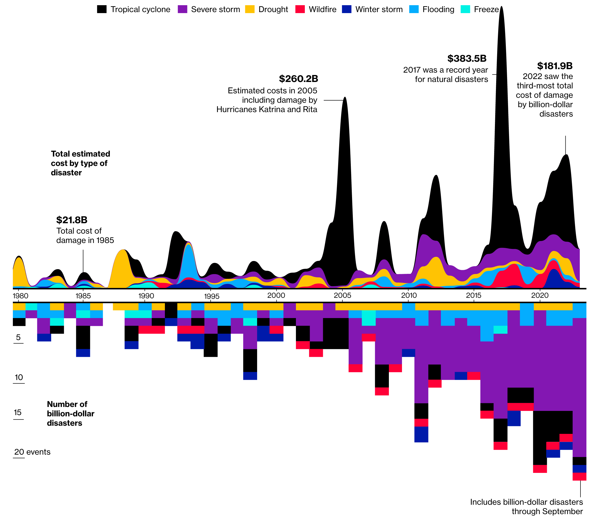

library(tidyverse)
library(knitr)
source("utils.R") # Custom utility functions and variablesVisualizing Billion-Dollar Disasters in the USA (1980–2024)
Data Preparation
Introduction
This document contains the data engineering required to reconstruct and improve the visualization by @dottle_climate_2023, shown in Figure 1, depicting the frequency and estimated costs of Billion-Dollar Disasters (BDDs) in the USA by year, between 1980 and 2024.
The code below requires the following packages:

Dataset
To conduct analysis on BDDs, two datasets published by the National Centers for Environmental Information (NCEI) of the United States of America were used (NCEI, 2024). An additional dataset derived from the NCEI’s website via web scraping was also used to provide additional contextual information on individual BDD events.
A summary on the three datasets used is provided below:
events-US-1980-2024.csv: This dataset contains information on BDDs in the USA from 1980 to 2024, organised by each individual event. This dataset was last revised by NCEI on 25 May 2024, and available here.time-series-US-cost-1980-2024.csv: This dataset contains information on BDDs in the USA from 1980 to 2024, organised by year and category. This dataset was last revised by NCEI on 25 May 2024, and available here.additional-events-US-1980-2024.csv: This dataset was derived from the NCEI’s website, last updated on 8 May 2024, via web scraping and contains additional information on individual BDD events. It will be combined with theevents-US-1980-2024.csvdataset to provide more context on each BDD event.
Relevant columns for data processing and analysis on each of the three datasets include:
events-US-1980-2024.csvName: Name of the disaster eventDisaster: Type of disaster that occurredBegin Date: Start date of disaster event (formatted asyyyymmdd)End Date: End date of disaster event (formatted asyyyymmdd)CPI-Adjusted Cost: The cost of the disaster event, adjusted for CPI (Consumer Price Index) over the yearsUnadjusted Cost: The unadjusted cost of the disaster eventDeaths: Number of deaths caused by the disaster event
time-series-US-cost-1980-2024.csvState: US State (redundant)Year: YearDrought Count: Total drought events for the yearDrought Cost: Total cost of drought events for the yearDrought Lower 751: Total estimated lower cost of drought events for the year (75% confidence interval probability)Drought Upper 751: Total estimated upper cost of drought events for the year (75% confidence interval probability)Drought Lower 901: Total estimated lower cost of drought events for the year (90% confidence interval probability)Drought Upper 901: Total estimated upper cost of drought events for the year (90% confidence interval probability)Drought Lower 951: Total estimated lower cost of drought events for the year (95% confidence interval probability)Drought Upper 951: Total estimated upper cost of drought events for the year (95% confidence interval probability)Flooding Count: Total flooding events for the yearFlooding Cost: Total cost of flooding events for the yearFlooding Lower 751: Total estimated lower cost of flooding events for the year (75% confidence interval probability)Flooding Upper 751: Total estimated upper cost of flooding events for the year (75% confidence interval probability)Flooding Lower 901: Total estimated lower cost of flooding events for the year (90% confidence interval probability)Flooding Upper 901: Total estimated upper cost of flooding events for the year (90% confidence interval probability)Flooding Lower 951: Total estimated lower cost of flooding events for the year (95% confidence interval probability)Flooding Upper 951: Total estimated upper cost of flooding events for the year (95% confidence interval probability)Freeze Count: Total freeze events for the yearFreeze Cost: Total cost of freeze events for the yearFreeze Lower 751: Total estimated lower cost of freeze events for the year (75% confidence interval probability)Freeze Upper 751: Total estimated upper cost of freeze events for the year (75% confidence interval probability)Freeze Lower 901: Total estimated lower cost of freeze events for the year (90% confidence interval probability)Freeze Upper 901: Total estimated upper cost of freeze events for the year (90% confidence interval probability)Freeze Lower 951: Total estimated lower cost of freeze events for the year (95% confidence interval probability)Freeze Upper 951: Total estimated upper cost of freeze events for the year (95% confidence interval probability)Severe Storm Count: Total severe storm events for the yearSevere Storm Cost: Total cost of severe storm events for the yearSevere Storm Lower 751: Total estimated lower cost of severe storm events for the year (75% confidence interval probability)Severe Storm Upper 751: Total estimated upper cost of severe storm events for the year (75% confidence interval probability)Severe Storm Lower 901: Total estimated lower cost of severe storm events for the year (90% confidence interval probability)Severe Storm Upper 901: Total estimated upper cost of severe storm events for the year (90% confidence interval probability)Severe Storm Lower 951: Total estimated lower cost of severe storm events for the year (95% confidence interval probability)Severe Storm Upper 951: Total estimated upper cost of severe storm events for the year (95% confidence interval probability)Tropical Cyclone Count: Total tropical cyclone events for the yearTropical Cyclone Cost: Total cost of tropical cyclone events for the yearTropical Cyclone Lower 751: Total estimated lower cost of tropical cyclone events for the year (75% confidence interval probability)Tropical Cyclone Upper 751: Total estimated upper cost of tropical cyclone events for the year (75% confidence interval probability)Tropical Cyclone Lower 901: Total estimated lower cost of tropical cyclone events for the year (90% confidence interval probability)Tropical Cyclone Upper 901: Total estimated upper cost of tropical cyclone events for the year (90% confidence interval probability)Tropical Cyclone Lower 951: Total estimated lower cost of tropical cyclone events for the year (95% confidence interval probability)Tropical Cyclone Upper 951: Total estimated upper cost of tropical cyclone events for the year (95% confidence interval probability)Wildfire Count: Total wildfire events for the yearWildfire Cost: Total cost of wildfire events for the yearWildfire Lower 751: Total estimated lower cost of wildfire events for the year (75% confidence interval probability)Wildfire Upper 751: Total estimated upper cost of wildfire events for the year (75% confidence interval probability)Wildfire Lower 901: Total estimated lower cost of wildfire events for the year (90% confidence interval probability)Wildfire Upper 901: Total estimated upper cost of wildfire events for the year (90% confidence interval probability)Wildfire Lower 951: Total estimated lower cost of wildfire events for the year (95% confidence interval probability)Wildfire Upper 951: Total estimated upper cost of wildfire events for the year (95% confidence interval probability)Winter Storm Count: Total winter storm events for the yearWinter Storm Cost: Total cost of winter storm events for the yearWinter Storm Lower 751: Total estimated lower cost of winter storm events for the year (75% confidence interval probability)Winter Storm Upper 751: Total estimated upper cost of winter storm events for the year (75% confidence interval probability)Winter Storm Lower 901: Total estimated lower cost of winter storm events for the year (90% confidence interval probability)Winter Storm Upper 901: Total estimated upper cost of winter storm events for the year (90% confidence interval probability)Winter Storm Lower 951: Total estimated lower cost of winter storm events for the year (95% confidence interval probability)Winter Storm Upper 951: Total estimated upper cost of winter storm events for the year (95% confidence interval probability)All Disasters Count: Total disaster events for the yearAll Disasters Cost: Total cost of all disaster events for the yearAll Disasters Lower 751: Total estimated lower cost of all disaster events for the year (75% confidence interval probability)All Disasters Upper 751: Total estimated upper cost of all disaster events for the year (75% confidence interval probability)All Disasters Lower 901: Total estimated lower cost of all disaster events for the year (90% confidence interval probability)All Disasters Upper 901: Total estimated upper cost of all disaster events for the year (90% confidence interval probability)All Disasters Lower 951: Total estimated lower cost of all disaster events for the year (95% confidence interval probability)All Disasters Upper 951: Total estimated upper cost of all disaster events for the year (95% confidence interval probability)
additional-events-US-1980-2024.csvName: Name of the disaster eventDisaster: Type of disaster that occurredBegin Date: Start date of disaster event (formatted asyyyymmdd)End Date: End date of disaster event (formatted asyyyymmdd)Summary: Description of disaster eventCPI-Adjusted Cost: The cost of the disaster event, adjusted for CPI (Consumer Price Index) over the yearsUnadjusted Cost: The unadjusted cost of the disaster eventDeaths: Number of deaths caused by the disaster event
1Confidence Interval (CI) probabilities represent the uncertainty associated with the particular BDD event’s cost estimate, after Monte Carlo simulations were performed (Smith & Matthews, 2015).
Exploratory Data Analysis
# Load time-series dataset
bdd_time_series <- read_csv("data/time-series-US-cost-1980-2024.csv", skip = 2)
bdd_time_series# A tibble: 45 × 66
State Year `Drought Count` `Drought Cost` `Drought Lower 75`
<chr> <dbl> <dbl> <dbl> <dbl>
1 US 1980 1 40.2 32.1
2 US 1981 0 0 0
3 US 1982 0 0 0
4 US 1983 1 9.5 6.7
5 US 1984 0 0 0
6 US 1985 0 0 0
7 US 1986 1 5.1 4.3
8 US 1987 0 0 0
9 US 1988 1 54 41
10 US 1989 1 7.7 6.7
# ℹ 35 more rows
# ℹ 61 more variables: `Drought Upper 75` <dbl>, `Drought Lower 90` <dbl>,
# `Drought Upper 90` <dbl>, `Drought Lower 95` <dbl>,
# `Drought Upper 95` <dbl>, `Flooding Count` <dbl>, `Flooding Cost` <dbl>,
# `Flooding Lower 75` <dbl>, `Flooding Upper 75` <dbl>,
# `Flooding Lower 90` <dbl>, `Flooding Upper 90` <dbl>,
# `Flooding Lower 95` <dbl>, `Flooding Upper 95` <dbl>, …# Load events dataset
bdd_base_events <- read_csv("data/events-US-1980-2024.csv", skip = 2)
bdd_base_events# A tibble: 383 × 7
Name Disaster `Begin Date` `End Date` `CPI-Adjusted Cost` `Unadjusted Cost`
<chr> <chr> <dbl> <dbl> <dbl> <dbl>
1 South… Flooding 19800410 19800417 2728. 707.
2 Hurri… Tropica… 19800807 19800811 2213. 590
3 Centr… Drought 19800601 19801130 40180. 10020
4 Flori… Freeze 19810112 19810114 2054. 572
5 Sever… Severe … 19810505 19810510 1397 401.
6 Midwe… Winter … 19820108 19820116 2191 662
7 Midwe… Severe … 19820402 19820404 1590. 483.
8 Sever… Severe … 19820531 19820610 1564. 480.
9 Gulf … Flooding 19821201 19830115 4900. 1536.
10 Weste… Flooding 19821213 19830331 4784. 1500.
# ℹ 373 more rows
# ℹ 1 more variable: Deaths <dbl># Load additional events dataset
bdd_additional_events <- read_csv("data/additional-events-US-1980-2024.csv")
bdd_additional_events# A tibble: 383 × 7
Name Disaster `Begin Date` `End Date` Summary `CPI-Adjusted Cost` Deaths
<chr> <chr> <chr> <chr> <chr> <dbl> <dbl>
1 Southern… Severe … 08/04/2024 11/04/2024 Southe… 1.5 0
2 Central … Severe … 01/04/2024 03/04/2024 A cent… 1.8 3
3 Central … Severe … 13/03/2024 15/03/2024 Damagi… 4.4 3
4 Southern… Severe … 10/02/2024 12/02/2024 Severe… 1.2 0
5 Central … Winter … 14/01/2024 18/01/2024 A bitt… 1.3 41
6 Northwes… Winter … 12/01/2024 15/01/2024 A stro… 1.1 20
7 Southern… Severe … 08/01/2024 10/01/2024 Southe… 2.7 3
8 East Coa… Flooding 16/12/2023 18/12/2023 Powerf… 1.3 5
9 Southern… Drought 01/04/2023 30/09/2023 Drough… 14.6 247
10 Southern… Severe … 23/09/2023 24/09/2023 Hail s… 1.7 0
# ℹ 373 more rowsData Cleaning
Process Time Series Data
Data Preparation
# Remove unwanted columns from the time-series dataset
bdd_time_series <- select(bdd_time_series, matches("^[^0-9]*$"), -`State`)
bdd_time_series# A tibble: 45 × 17
Year `Drought Count` `Drought Cost` `Flooding Count` `Flooding Cost`
<dbl> <dbl> <dbl> <dbl> <dbl>
1 1980 1 40.2 1 2.7
2 1981 0 0 0 0
3 1982 0 0 0 0
4 1983 1 9.5 3 10.9
5 1984 0 0 0 0
6 1985 0 0 1 4
7 1986 1 5.1 1 1.1
8 1987 0 0 0 0
9 1988 1 54 0 0
10 1989 1 7.7 0 0
# ℹ 35 more rows
# ℹ 12 more variables: `Freeze Count` <dbl>, `Freeze Cost` <dbl>,
# `Severe Storm Count` <dbl>, `Severe Storm Cost` <dbl>,
# `Tropical Cyclone Count` <dbl>, `Tropical Cyclone Cost` <dbl>,
# `Wildfire Count` <dbl>, `Wildfire Cost` <dbl>, `Winter Storm Count` <dbl>,
# `Winter Storm Cost` <dbl>, `All Disasters Count` <dbl>,
# `All Disasters Cost` <dbl>Cost of Billion Dollar Disasters
# Get cost of BDD events by year
bdd_cost <- bdd_time_series |>
select(contains("Cost"), -matches("All"), Year) |>
rename_with(~ gsub(" Cost$", "", .x), contains("Cost")) |>
pivot_longer(cols = -Year, names_to = "Disaster", values_to = "Cost")
# Add disaster subcategory, arrange and sort the dataset
bdd_cost <-
add_disaster_category(bdd_cost) |>
select(Year, Disaster, Category, Cost) |>
arrange(Year, Category, Disaster)
bdd_cost# A tibble: 315 × 4
Year Disaster Category Cost
<dbl> <chr> <chr> <dbl>
1 1980 Drought Dry Weather Events 40.2
2 1980 Wildfire Dry Weather Events 0
3 1980 Severe Storm Storm Events 0
4 1980 Tropical Cyclone Storm Events 2.2
5 1980 Flooding Wet Weather Events 2.7
6 1980 Freeze Wet Weather Events 0
7 1980 Winter Storm Wet Weather Events 0
8 1981 Drought Dry Weather Events 0
9 1981 Wildfire Dry Weather Events 0
10 1981 Severe Storm Storm Events 1.4
# ℹ 305 more rows# Ensure that there are no missing values or categories
verify_data(bdd_cost)Dataframe is error free# Get cost of disaster categories for every 5-year interval
bdd_cost_summary <- bdd_cost |>
mutate(Interval = cut(Year, breaks = seq(1980, max(Year) + 5, by = 5), right = FALSE, include.lowest = TRUE)) |>
mutate(Interval = factor(Interval, levels = levels(Interval), ordered = TRUE, labels = gsub("2025", "2024", gsub(",", "-", gsub("\\[|\\)|\\]", "", levels(Interval)))))) |>
group_by(Interval, Category) |>
summarize(Cost = sum(Cost, na.rm = TRUE), .groups = 'drop')
bdd_cost_summary# A tibble: 27 × 3
Interval Category Cost
<ord> <chr> <dbl>
1 1980-1985 Dry Weather Events 49.7
2 1980-1985 Storm Events 19.3
3 1980-1985 Wet Weather Events 24.3
4 1985-1990 Dry Weather Events 66.8
5 1985-1990 Storm Events 39.1
6 1985-1990 Wet Weather Events 18.1
7 1990-1995 Dry Weather Events 23.4
8 1990-1995 Storm Events 86.3
9 1990-1995 Wet Weather Events 84.8
10 1995-2000 Dry Weather Events 17.1
# ℹ 17 more rows# Ensure that there are no missing values or categories
verify_data(bdd_cost_summary)Dataframe is error free# Get aggregated cost of disaster categories for every 5-year interval
bdd_cost_aggregated <- bdd_cost_summary |>
group_by(Interval) |>
summarize(Cost = sum(Cost, na.rm = TRUE), .groups = 'drop') |>
mutate(Category = "All Events") |>
select(Interval, Category, Cost)
bdd_cost_aggregated# A tibble: 9 × 3
Interval Category Cost
<ord> <chr> <dbl>
1 1980-1985 All Events 93.3
2 1985-1990 All Events 124
3 1990-1995 All Events 194.
4 1995-2000 All Events 137.
5 2000-2005 All Events 193.
6 2005-2010 All Events 422.
7 2010-2015 All Events 332.
8 2015-2020 All Events 654.
9 2020-2024 All Events 571. # Combine the aggregated cost with the summary dataset
# bdd_cost_aggregated <- bdd_cost_aggregated |>
# bind_rows(bdd_cost_summary) |>
# arrange(Interval, Category)
# bdd_cost_aggregated
# Ensure that there are no missing values or categories
verify_data(bdd_cost_aggregated)Dataframe is error freeFrequency of Billion Dollar Disasters
# Get frequency of BDD events by year, and add disaster subcategory
bdd_frequency <- bdd_time_series |>
select(contains("Count"), -matches("All"), Year) |>
rename_with(~ gsub(" Count$", "", .x), contains("Count")) |>
pivot_longer(cols = -Year, names_to = "Disaster", values_to = "Count")
# Add disaster subcategory, arrange and sort the dataset
bdd_frequency <-
add_disaster_category(bdd_frequency) |>
select(Year, Disaster, Category, Count) |>
arrange(Year, Category, Disaster)
bdd_frequency# A tibble: 315 × 4
Year Disaster Category Count
<dbl> <chr> <chr> <dbl>
1 1980 Drought Dry Weather Events 1
2 1980 Wildfire Dry Weather Events 0
3 1980 Severe Storm Storm Events 0
4 1980 Tropical Cyclone Storm Events 1
5 1980 Flooding Wet Weather Events 1
6 1980 Freeze Wet Weather Events 0
7 1980 Winter Storm Wet Weather Events 0
8 1981 Drought Dry Weather Events 0
9 1981 Wildfire Dry Weather Events 0
10 1981 Severe Storm Storm Events 1
# ℹ 305 more rows# Ensure that there are no missing values or categories
verify_data(bdd_frequency)Dataframe is error freeProcess Events Data
Base Events
# Convert datatype of Begin Date and End Date to dates
bdd_base_events <- bdd_base_events |>
mutate(`Begin Date` = ymd(`Begin Date`),
`End Date` = ymd(`End Date`),
`Begin Date` = format(`Begin Date`, "%d/%m/%Y"),
`End Date` = format(`End Date`, "%d/%m/%Y"),
`Begin Date` = dmy(`Begin Date`),
`End Date` = dmy(`End Date`)
)
# Add disaster subcategory to the base events
bdd_base_events <- add_disaster_category(bdd_base_events)
bdd_base_events# A tibble: 383 × 8
Name Disaster `Begin Date` `End Date` `CPI-Adjusted Cost` `Unadjusted Cost`
<chr> <chr> <date> <date> <dbl> <dbl>
1 South… Flooding 1980-04-10 1980-04-17 2728. 707.
2 Hurri… Tropica… 1980-08-07 1980-08-11 2213. 590
3 Centr… Drought 1980-06-01 1980-11-30 40180. 10020
4 Flori… Freeze 1981-01-12 1981-01-14 2054. 572
5 Sever… Severe … 1981-05-05 1981-05-10 1397 401.
6 Midwe… Winter … 1982-01-08 1982-01-16 2191 662
7 Midwe… Severe … 1982-04-02 1982-04-04 1590. 483.
8 Sever… Severe … 1982-05-31 1982-06-10 1564. 480.
9 Gulf … Flooding 1982-12-01 1983-01-15 4900. 1536.
10 Weste… Flooding 1982-12-13 1983-03-31 4784. 1500.
# ℹ 373 more rows
# ℹ 2 more variables: Deaths <dbl>, Category <chr>Additional Events
# Convert datatype of Begin Date and End Date to dates
bdd_additional_events <- bdd_additional_events |>
mutate(`Begin Date` = dmy(`Begin Date`),
`End Date` = dmy(`End Date`),
`Begin Date` = as.Date(`Begin Date`, format = "%d/%m/%Y"),
`End Date` = as.Date(`End Date`, format = "%d/%m/%Y")
)
# Add disaster subcategory to the additional events, and select relevant columns
bdd_additional_events <-
add_disaster_category(bdd_additional_events) |>
select(Name, `Begin Date`, `End Date`, Category, Summary)
bdd_additional_events# A tibble: 383 × 5
Name `Begin Date` `End Date` Category Summary
<chr> <date> <date> <chr> <chr>
1 Southern and Eastern Severe Weather… 2024-04-08 2024-04-11 Storm E… Southe…
2 Central Tornado Outbreak and Easter… 2024-04-01 2024-04-03 Storm E… A cent…
3 Central and Southern Severe Weather… 2024-03-13 2024-03-15 Storm E… Damagi…
4 Southern Severe Weather (February 2… 2024-02-10 2024-02-12 Storm E… Severe…
5 Central and Southern Winter Storm a… 2024-01-14 2024-01-18 Wet Wea… A bitt…
6 Northwest Winter Storm (January 202… 2024-01-12 2024-01-15 Wet Wea… A stro…
7 Southern Tornado Outbreak and East … 2024-01-08 2024-01-10 Storm E… Southe…
8 East Coast Storm and Flooding (Dece… 2023-12-16 2023-12-18 Wet Wea… Powerf…
9 Southern/Midwestern Drought and Hea… 2023-04-01 2023-09-30 Dry Wea… Drough…
10 Southern Hail Storms (September 202… 2023-09-23 2023-09-24 Storm E… Hail s…
# ℹ 373 more rowsCombine Events Data
# Combine both events and additional events datasets
bdd_events <- bdd_base_events |>
left_join(
bdd_additional_events,
by = c("Name", "Begin Date", "End Date", "Category")
) |>
mutate(Year = year(`Begin Date`)) |>
select(
`Name`, `Disaster`, `Category`, `Deaths`,
`Year`, `Begin Date`, `End Date`, `CPI-Adjusted Cost`,
`Unadjusted Cost`, `Summary`) |>
arrange(`Year`, `Begin Date`, `End Date`)
bdd_events# A tibble: 383 × 10
Name Disaster Category Deaths Year `Begin Date` `End Date`
<chr> <chr> <chr> <dbl> <dbl> <date> <date>
1 Southern Severe Storm… Flooding Wet Wea… 7 1980 1980-04-10 1980-04-17
2 Central/Eastern Droug… Drought Dry Wea… 1260 1980 1980-06-01 1980-11-30
3 Hurricane Allen (Augu… Tropica… Storm E… 13 1980 1980-08-07 1980-08-11
4 Florida Freeze (Janua… Freeze Wet Wea… 0 1981 1981-01-12 1981-01-14
5 Severe Storms, Flash … Severe … Storm E… 20 1981 1981-05-05 1981-05-10
6 Midwest/Southeast/Nor… Winter … Wet Wea… 85 1982 1982-01-08 1982-01-16
7 Midwest/Plains/Southe… Severe … Storm E… 33 1982 1982-04-02 1982-04-04
8 Severe Storms (June 1… Severe … Storm E… 30 1982 1982-05-31 1982-06-10
9 Gulf States Storms an… Flooding Wet Wea… 45 1982 1982-12-01 1983-01-15
10 Western Storms and Fl… Flooding Wet Wea… 50 1982 1982-12-13 1983-03-31
# ℹ 373 more rows
# ℹ 3 more variables: `CPI-Adjusted Cost` <dbl>, `Unadjusted Cost` <dbl>,
# Summary <chr># Ensure that there are no missing values or categories
verify_data(bdd_events)Dataframe is error free# Export combined dataset into CSV
write_csv(bdd_events, "data/combined-events.csv")Process Combined Events Data
Get frequency and estimated cost of BDD events by year, which is equivalent to the bdd_events and bdd_frequency tibbles, but not including categories with values = 0. This is to enable cross-checking and data verifications to be performed, to ensure that the values in bdd_events and bdd_frequency, derived from the time series dataset, are accurate and correct.
# Get frequency and costs of BDD events by year
bdd_events_frequency_cost <- bdd_events |>
group_by(Year, Disaster) |>
summarise(
Count = n(),
`CPI-Adjusted Cost` = sum(`CPI-Adjusted Cost`, na.rm = TRUE),
`Unadjusted Cost` = sum(`Unadjusted Cost`, na.rm = TRUE),
.groups = "drop"
) |>
mutate(Category = case_when(
Disaster %in% names(disaster_mapping) ~ disaster_mapping[Disaster],
TRUE ~ "Other"
)) |>
select(`Year`, `Disaster`, `Category`, `Count`,
`CPI-Adjusted Cost`, `Unadjusted Cost`)
bdd_events_frequency_cost# A tibble: 174 × 6
Year Disaster Category Count `CPI-Adjusted Cost` `Unadjusted Cost`
<dbl> <chr> <chr> <int> <dbl> <dbl>
1 1980 Drought Dry Weath… 1 40180. 10020
2 1980 Flooding Wet Weath… 1 2728. 707.
3 1980 Tropical Cyclone Storm Eve… 1 2213. 590
4 1981 Freeze Wet Weath… 1 2054. 572
5 1981 Severe Storm Storm Eve… 1 1397 401.
6 1982 Flooding Wet Weath… 2 9684. 3036.
7 1982 Severe Storm Storm Eve… 2 3154. 963.
8 1982 Winter Storm Wet Weath… 1 2191 662
9 1983 Drought Dry Weath… 1 9456. 2964.
10 1983 Flooding Wet Weath… 1 1240 400
# ℹ 164 more rows# Ensure that there are no missing values or categories
verify_data(bdd_events_frequency_cost)Dataframe is error freeConclusion
The data are now ready for visualization. The next step will be to create a plot that will allow us to visualise the frequency and estimated costs of Billion-Dollar Disasters in the USA from 1980 to 2024.
References
NOAA National Centers for Environmental Information (NCEI) U.S. Billion-Dollar Weather and Climate Disasters (2024). https://www.ncei.noaa.gov/access/billions/, DOI: 10.25921/stkw-7w73. Accessed [1 June 2024].
Smith, A., and J. Matthews, 2015: Quantifying Uncertainty and Variable Sensitivity within the U.S. Billion-dollar Weather and Climate Disaster Cost Estimates. Natural Hazards., DOI: 10.1007/s11069-015-1678-x. Accessed [1 June 2024].